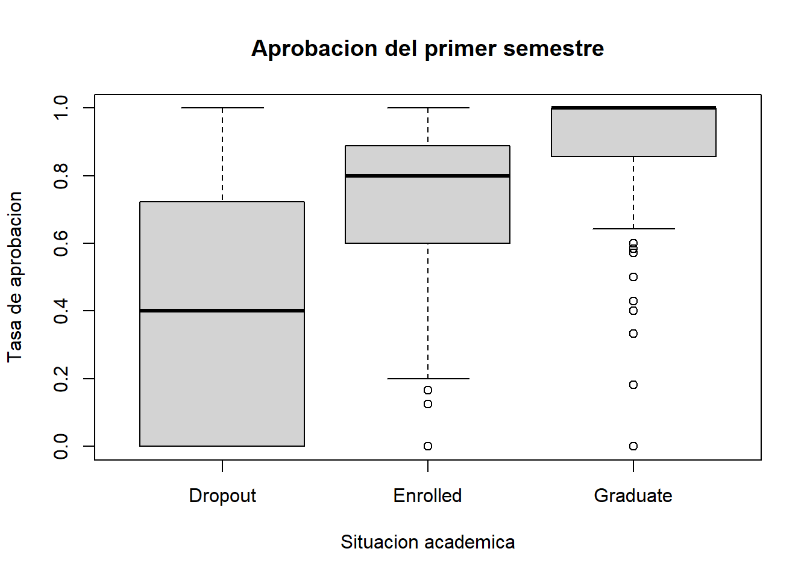
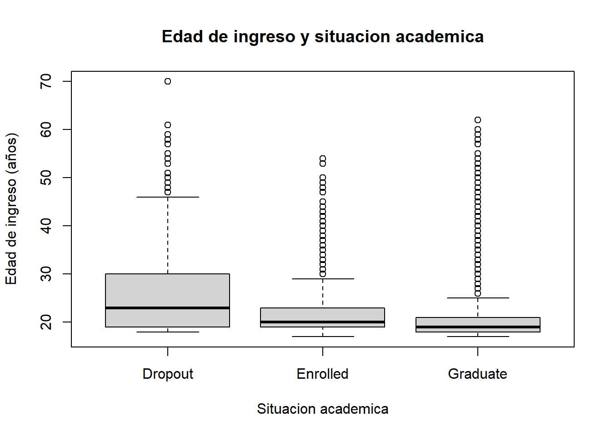
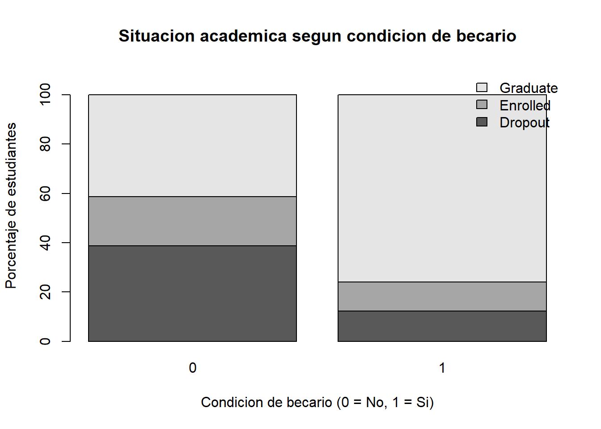
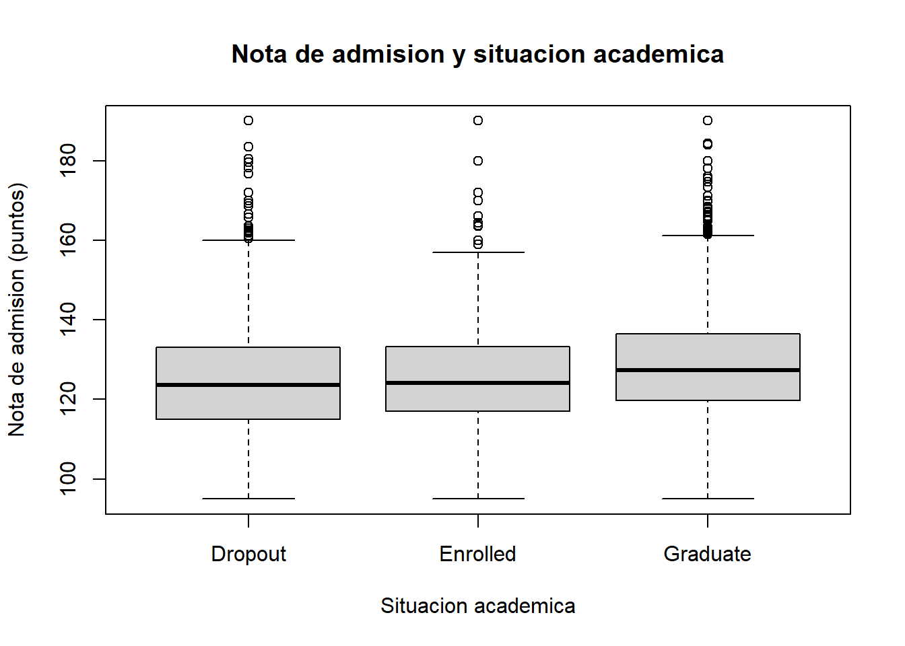

1 + 1[1] 2Producto de la Unidad I - Ciencia de Datos e IA Aplicada
Quarto enables you to weave together content and executable code into a finished document. To learn more about Quarto see https://quarto.org.
1 + 1[1] 2# 1. Lectura y estructura de datos
datos <- read.delim("data/raw/data.csv",
sep = ";",
dec = ".",
check.names = FALSE)
dim(datos)[1] 4424 37str(datos)'data.frame': 4424 obs. of 37 variables:
$ Marital status : int 1 1 1 1 2 2 1 1 1 1 ...
$ Application mode : int 17 15 1 17 39 39 1 18 1 1 ...
$ Application order : int 5 1 5 2 1 1 1 4 3 1 ...
$ Course : int 171 9254 9070 9773 8014 9991 9500 9254 9238 9238 ...
$ Daytime/evening attendance : int 1 1 1 1 0 0 1 1 1 1 ...
$ Previous qualification : int 1 1 1 1 1 19 1 1 1 1 ...
$ Previous qualification (grade) : num 122 160 122 122 100 ...
$ Nacionality : int 1 1 1 1 1 1 1 1 62 1 ...
$ Mother's qualification : int 19 1 37 38 37 37 19 37 1 1 ...
$ Father's qualification : int 12 3 37 37 38 37 38 37 1 19 ...
$ Mother's occupation : int 5 3 9 5 9 9 7 9 9 4 ...
$ Father's occupation : int 9 3 9 3 9 7 10 9 9 7 ...
$ Admission grade : num 127 142 125 120 142 ...
$ Displaced : int 1 1 1 1 0 0 1 1 0 1 ...
$ Educational special needs : int 0 0 0 0 0 0 0 0 0 0 ...
$ Debtor : int 0 0 0 0 0 1 0 0 0 1 ...
$ Tuition fees up to date : int 1 0 0 1 1 1 1 0 1 0 ...
$ Gender : int 1 1 1 0 0 1 0 1 0 0 ...
$ Scholarship holder : int 0 0 0 0 0 0 1 0 1 0 ...
$ Age at enrollment : int 20 19 19 20 45 50 18 22 21 18 ...
$ International : int 0 0 0 0 0 0 0 0 1 0 ...
$ Curricular units 1st sem (credited) : int 0 0 0 0 0 0 0 0 0 0 ...
$ Curricular units 1st sem (enrolled) : int 0 6 6 6 6 5 7 5 6 6 ...
$ Curricular units 1st sem (evaluations) : int 0 6 0 8 9 10 9 5 8 9 ...
$ Curricular units 1st sem (approved) : int 0 6 0 6 5 5 7 0 6 5 ...
$ Curricular units 1st sem (grade) : num 0 14 0 13.4 12.3 ...
$ Curricular units 1st sem (without evaluations): int 0 0 0 0 0 0 0 0 0 0 ...
$ Curricular units 2nd sem (credited) : int 0 0 0 0 0 0 0 0 0 0 ...
$ Curricular units 2nd sem (enrolled) : int 0 6 6 6 6 5 8 5 6 6 ...
$ Curricular units 2nd sem (evaluations) : int 0 6 0 10 6 17 8 5 7 14 ...
$ Curricular units 2nd sem (approved) : int 0 6 0 5 6 5 8 0 6 2 ...
$ Curricular units 2nd sem (grade) : num 0 13.7 0 12.4 13 ...
$ Curricular units 2nd sem (without evaluations): int 0 0 0 0 0 5 0 0 0 0 ...
$ Unemployment rate : num 10.8 13.9 10.8 9.4 13.9 16.2 15.5 15.5 16.2 8.9 ...
$ Inflation rate : num 1.4 -0.3 1.4 -0.8 -0.3 0.3 2.8 2.8 0.3 1.4 ...
$ GDP : num 1.74 0.79 1.74 -3.12 0.79 -0.92 -4.06 -4.06 -0.92 3.51 ...
$ Target : chr "Dropout" "Graduate" "Dropout" "Graduate" ...head(datos[, 1:6]) Marital status Application mode Application order Course
1 1 17 5 171
2 1 15 1 9254
3 1 1 5 9070
4 1 17 2 9773
5 2 39 1 8014
6 2 39 1 9991
Daytime/evening attendance\t Previous qualification
1 1 1
2 1 1
3 1 1
4 1 1
5 0 1
6 0 19##El conjunto de datos está conformado por 4 424 observaciones y 37 variables, de las cuales 36 corresponden a características académicas, demográficas, socioeconómicas e institucionales de los estudiantes. La variable respuesta, denominada Target, representa su situación académica. La revisión inicial permitió identificar variables numéricas y categóricas codificadas mediante valores enteros, por lo que será necesario considerar su naturaleza durante las etapas posteriores de preparación y análisis.
# 2. Auditoria de datos
# Valores faltantes
sum(is.na(datos))[1] 0# Registros duplicados
sum(duplicated(datos))[1] 0# Faltantes por variable
colSums(is.na(datos)) Marital status
0
Application mode
0
Application order
0
Course
0
Daytime/evening attendance\t
0
Previous qualification
0
Previous qualification (grade)
0
Nacionality
0
Mother's qualification
0
Father's qualification
0
Mother's occupation
0
Father's occupation
0
Admission grade
0
Displaced
0
Educational special needs
0
Debtor
0
Tuition fees up to date
0
Gender
0
Scholarship holder
0
Age at enrollment
0
International
0
Curricular units 1st sem (credited)
0
Curricular units 1st sem (enrolled)
0
Curricular units 1st sem (evaluations)
0
Curricular units 1st sem (approved)
0
Curricular units 1st sem (grade)
0
Curricular units 1st sem (without evaluations)
0
Curricular units 2nd sem (credited)
0
Curricular units 2nd sem (enrolled)
0
Curricular units 2nd sem (evaluations)
0
Curricular units 2nd sem (approved)
0
Curricular units 2nd sem (grade)
0
Curricular units 2nd sem (without evaluations)
0
Unemployment rate
0
Inflation rate
0
GDP
0
Target
0 # Frecuencia de la variable respuesta
table(datos$Target)
Dropout Enrolled Graduate
1421 794 2209 # Porcentaje por categoria
round(prop.table(table(datos$Target)) * 100, 2)
Dropout Enrolled Graduate
32.12 17.95 49.93 ##La auditoría inicial del conjunto de datos permitió verificar 4 424 observaciones y 37 variables. No se identificaron valores faltantes ni registros exactamente duplicados, lo que evidencia una adecuada completitud de la información. Respecto a la situación académica, el 49,93 % de los estudiantes corresponde a graduados, el 32,12 % a estudiantes que abandonaron sus estudios y el 17,95 % a estudiantes matriculados.
# 3. Validacion y consistencia
# Edad de ingreso
summary(datos[["Age at enrollment"]]) Min. 1st Qu. Median Mean 3rd Qu. Max.
17.00 19.00 20.00 23.27 25.00 70.00 # Calificacion de admision
summary(datos[["Admission grade"]]) Min. 1st Qu. Median Mean 3rd Qu. Max.
95.0 117.9 126.1 127.0 134.8 190.0 # Calificaciones por semestre
summary(datos[["Curricular units 1st sem (grade)"]]) Min. 1st Qu. Median Mean 3rd Qu. Max.
0.00 11.00 12.29 10.64 13.40 18.88 summary(datos[["Curricular units 2nd sem (grade)"]]) Min. 1st Qu. Median Mean 3rd Qu. Max.
0.00 10.75 12.20 10.23 13.33 18.57 # Comprobar edades no validas
sum(datos[["Age at enrollment"]] <= 0)[1] 0# Revisar asignaturas aprobadas y matriculadas
sum(datos[["Curricular units 1st sem (approved)"]] >
datos[["Curricular units 1st sem (enrolled)"]])[1] 0sum(datos[["Curricular units 2nd sem (approved)"]] >
datos[["Curricular units 2nd sem (enrolled)"]])[1] 0##La evaluación de consistencia permitió identificar una edad promedio de ingreso de 23,27 años, con valores comprendidos entre 17 y 70 años. La calificación promedio de admisión fue de 127 puntos, mientras que las calificaciones promedio del primer y segundo semestre fueron de 10,64 y 10,23 puntos, respectivamente. No se identificaron edades no positivas ni registros donde las asignaturas aprobadas superaran a las matriculadas. Sin embargo, la presencia de calificaciones iguales a cero y edades relativamente elevadas requiere una revisión adicional antes de establecer decisiones de limpieza.
# 4. Revision de valores extremos y ceros
# Estudiantes mayores de 40 años
sum(datos[["Age at enrollment"]] > 40)[1] 225# Primer semestre
sum(datos[["Curricular units 1st sem (enrolled)"]] == 0)[1] 180sum(datos[["Curricular units 1st sem (grade)"]] == 0)[1] 718# Segundo semestre
sum(datos[["Curricular units 2nd sem (enrolled)"]] == 0)[1] 180sum(datos[["Curricular units 2nd sem (grade)"]] == 0)[1] 870##La revisión adicional identificó 225 estudiantes mayores de 40 años y 180 registros sin asignaturas matriculadas en cada semestre. Asimismo, se encontraron 718 calificaciones iguales a cero en el primer semestre y 870 en el segundo. Estos valores requieren una evaluación diferenciada, debido a que pueden corresponder a situaciones académicas legítimas y no necesariamente a errores de registro. Por tanto, se decidió conservar provisionalmente las observaciones originales hasta verificar su consistencia y significado.
# 5. Relacion entre matricula y calificaciones
# Primer semestre
table(
matricula_cero = datos[["Curricular units 1st sem (enrolled)"]] == 0,
nota_cero = datos[["Curricular units 1st sem (grade)"]] == 0
) nota_cero
matricula_cero FALSE TRUE
FALSE 3706 538
TRUE 0 180# Segundo semestre
table(
matricula_cero = datos[["Curricular units 2nd sem (enrolled)"]] == 0,
nota_cero = datos[["Curricular units 2nd sem (grade)"]] == 0
) nota_cero
matricula_cero FALSE TRUE
FALSE 3554 690
TRUE 0 180##La evaluación de las calificaciones iguales a cero permitió distinguir dos situaciones académicas. En el primer semestre se identificaron 180 estudiantes sin asignaturas matriculadas y 538 estudiantes con matrícula, pero con calificación cero. En el segundo semestre se observaron 180 y 690 casos, respectivamente. No se encontraron estudiantes sin asignaturas matriculadas que presentaran calificaciones superiores a cero. Estos resultados evidencian consistencia en los registros sin matrícula; sin embargo, las calificaciones cero de estudiantes matriculados requieren cautela interpretativa. Por ello, se decidió conservar los valores originales y evitar imputaciones o eliminaciones sin sustento adicional.
# 6. Preparacion de los datos
datos_curados <- datos
# Tasa de aprobacion del primer semestre
datos_curados$tasa_aprobacion_1 <- with(datos,
ifelse(`Curricular units 1st sem (enrolled)` > 0,
`Curricular units 1st sem (approved)` /
`Curricular units 1st sem (enrolled)`,
NA_real_)
)
# Tasa de aprobacion del segundo semestre
datos_curados$tasa_aprobacion_2 <- with(datos,
ifelse(`Curricular units 2nd sem (enrolled)` > 0,
`Curricular units 2nd sem (approved)` /
`Curricular units 2nd sem (enrolled)`,
NA_real_)
)
# Verificar resultados
dim(datos_curados)[1] 4424 39summary(datos_curados$tasa_aprobacion_1) Min. 1st Qu. Median Mean 3rd Qu. Max. NAs
0.0000 0.6000 0.8571 0.7275 1.0000 1.0000 180 summary(datos_curados$tasa_aprobacion_2) Min. 1st Qu. Median Mean 3rd Qu. Max. NAs
0.0000 0.5000 0.8333 0.6884 1.0000 1.0000 180 ##Las variables permitió construir dos indicadores de rendimiento académico a partir de la relación entre las asignaturas aprobadas y matriculadas en cada semestre. La tasa media de aprobación fue de 72,75 % en el primer semestre y 68,84 % en el segundo. Asimismo, se identificaron 180 registros por semestre en los que no fue posible calcular la tasa debido a la ausencia de asignaturas matriculadas. Estos casos fueron representados mediante valores NA, sin modificar los registros originales. El conjunto procesado conserva las 4 424 observaciones e incorpora dos nuevas variables, alcanzando un total de 39.
# 7. Validacion y almacenamiento
# Comprobar tasas de aprobacion
range(datos_curados$tasa_aprobacion_1, na.rm = TRUE)[1] 0 1range(datos_curados$tasa_aprobacion_2, na.rm = TRUE)[1] 0 1# Verificar limites y dimensiones
stopifnot(
nrow(datos_curados) == 4424,
ncol(datos_curados) == 39,
all(datos_curados$tasa_aprobacion_1 >= 0 &
datos_curados$tasa_aprobacion_1 <= 1,
na.rm = TRUE),
all(datos_curados$tasa_aprobacion_2 >= 0 &
datos_curados$tasa_aprobacion_2 <= 1,
na.rm = TRUE)
)
# Guardar datos procesados
dir.create("data/processed",
recursive = TRUE,
showWarnings = FALSE)
saveRDS(datos_curados,
"data/processed/estudiantes_curados.rds")
# Comprobar archivo
file.exists("data/processed/estudiantes_curados.rds")[1] TRUE# 8. Analisis exploratorio
# Tasa de aprobacion media por situacion academica
medias <- tapply(
datos_curados$tasa_aprobacion_1,
datos_curados$Target,
mean,
na.rm = TRUE
)
round(medias * 100, 2) Dropout Enrolled Graduate
40.60 71.35 93.50 # Mediana por situacion academica
medianas <- tapply(
datos_curados$tasa_aprobacion_1,
datos_curados$Target,
median,
na.rm = TRUE
)
round(medianas * 100, 2) Dropout Enrolled Graduate
40 80 100 # Casos sin tasa calculable por categoria
table(datos_curados$Target,
is.na(datos_curados$tasa_aprobacion_1))
FALSE TRUE
Dropout 1344 77
Enrolled 766 28
Graduate 2134 75# Grafico comparativo
boxplot(tasa_aprobacion_1 ~ Target,
data = datos_curados,
main = "Aprobacion del primer semestre",
xlab = "Situacion academica",
ylab = "Tasa de aprobacion",
ylim = c(0, 1))
##El análisis exploratorio evidenció diferencias en las tasas de aprobación del primer semestre según la situación académica de los estudiantes. Los graduados presentaron una tasa media de aprobación del 93,50 %, seguida de los estudiantes matriculados (71,35 %) y aquellos que abandonaron sus estudios (40,60 %). El diagrama de cajas mostró una mayor dispersión en el grupo de abandono, mientras que los graduados concentraron sus observaciones en tasas elevadas de aprobación. Estos resultados ofrecen evidencia descriptiva favorable a la primera hipótesis, sugiriendo una asociación entre el rendimiento académico temprano y la trayectoria educativa. No obstante, esta relación deberá evaluarse mediante procedimientos estadísticos y modelos predictivos posteriores.
# 9. Edad de ingreso y situacion academica
# Edad promedio por grupo
round(tapply(datos_curados[["Age at enrollment"]],
datos_curados$Target, mean), 2) Dropout Enrolled Graduate
26.07 22.37 21.78 # Mediana de edad por grupo
tapply(datos_curados[["Age at enrollment"]],
datos_curados$Target, median) Dropout Enrolled Graduate
23 20 19 # Grafico de cajas
boxplot(`Age at enrollment` ~ Target,
data = datos_curados,
main = "Edad de ingreso y situacion academica",
xlab = "Situacion academica",
ylab = "Edad de ingreso (años)",
col = "lightgray")
##El análisis exploratorio de la edad de ingreso evidenció diferencias entre las categorías de situación académica. Los estudiantes que abandonaron sus estudios presentaron una edad media de 26,07 años, superior a la registrada entre los estudiantes matriculados (22,37 años) y graduados (21,78 años). Asimismo, el diagrama de cajas mostró una mayor dispersión en el grupo de abandono y la presencia de edades elevadas en las tres categorías. Estos hallazgos sugieren una asociación entre la edad de ingreso y la trayectoria académica; sin embargo, no permiten establecer una relación causal ni confirmar diferencias estadísticamente significativas.
# 10. Condicion de becario y situacion academica
# Tabla de frecuencias
tabla_beca <- table(
Beca = datos_curados[["Scholarship holder"]],
Situacion = datos_curados$Target
)
tabla_beca Situacion
Beca Dropout Enrolled Graduate
0 1287 664 1374
1 134 130 835# Porcentajes por condicion de becario
porcentaje_beca <- round(
prop.table(tabla_beca, 1) * 100, 2
)
porcentaje_beca Situacion
Beca Dropout Enrolled Graduate
0 38.71 19.97 41.32
1 12.19 11.83 75.98# Grafico comparativo
barplot(
t(porcentaje_beca),
main = "Situacion academica segun condicion de becario",
xlab = "Condicion de becario (0 = No, 1 = Si)",
ylab = "Porcentaje de estudiantes",
col = c("gray35", "gray65", "gray90"),
legend.text = TRUE,
args.legend = list(x = "topright", bty = "n"),
ylim = c(0, 110)
)
##El análisis exploratorio evidenció diferencias en la situación académica de los estudiantes según su condición de becario. Entre quienes recibieron una beca, el 75,98 % alcanzó la graduación y el 12,19 % abandonó sus estudios. En contraste, entre los estudiantes sin beca, la proporción de graduados fue del 41,32 %, mientras que el abandono alcanzó el 38,71 %. Estos resultados sugieren una asociación entre la condición de becario y la trayectoria académica. Sin embargo, las diferencias observadas no permiten atribuir un efecto causal a las becas, debido a la posible influencia de factores académicos y socioeconómicos adicionales.
# 11. Nota de admision y situacion academica
# Promedio por grupo
round(tapply(datos_curados[["Admission grade"]],
datos_curados$Target, mean), 2) Dropout Enrolled Graduate
124.96 125.53 128.79 # Mediana por grupo
tapply(datos_curados[["Admission grade"]],
datos_curados$Target, median) Dropout Enrolled Graduate
123.6 124.1 127.4 # Grafico de cajas
boxplot(`Admission grade` ~ Target,
data = datos_curados,
main = "Nota de admision y situacion academica",
xlab = "Situacion academica",
ylab = "Nota de admision (puntos)",
col = "lightgray")
##El análisis exploratorio de las calificaciones de admisión evidenció diferencias moderadas entre las categorías de situación académica. Los estudiantes graduados presentaron una calificación media de 128,79 puntos, superior a la registrada entre los estudiantes matriculados (125,53 puntos) y aquellos que abandonaron sus estudios (124,96 puntos). No obstante, el diagrama de cajas mostró un considerable solapamiento entre las distribuciones de los tres grupos. Estos resultados sugieren que la calificación de admisión podría estar asociada con la trayectoria académica, aunque su capacidad de diferenciación individual parece limitada. Las diferencias observadas son descriptivas y deberán evaluarse posteriormente mediante procedimientos estadísticos apropiados.
| Decisión | Justificación | Alternativa descartada | Efecto |
|---|---|---|---|
| Conservar registros | No se encontraron valores faltantes ni duplicados exactos | Eliminar registros sin evidencia de error | Se mantienen 4424 observaciones |
| Conservar edades elevadas | Pueden corresponder a estudiantes adultos | Eliminar edades mayores de 40 años | Se conservan 225 casos |
| Mantener notas iguales a cero | No se ha demostrado que representen errores | Sustituir ceros por valores imputados | Se mantienen las notas originales |
| Crear tasas de aprobación | Permiten comparar el rendimiento académico | Utilizar únicamente asignaturas aprobadas | Se agregan dos variables |
| Asignar NA sin matrícula | Evita dividir entre cero | Asignar una tasa de 0 % | Se generan 180 NA por semestre |
# 10. Diccionario de datos
diccionario <- read.csv2(
"documentacion/diccionario_datos.csv",
fileEncoding = "UTF-8-BOM",
check.names = FALSE
)
# Verificar el diccionario
dim(diccionario)[1] 39 7# Comprobar que todas las variables estén documentadas
setequal(diccionario$variable, names(datos_curados))[1] TRUE# Mostrar las primeras variables
head(diccionario[, 1:3]) variable descripcion tipo
1 Marital status Por documentar integer
2 Application mode Por documentar integer
3 Application order Por documentar integer
4 Course Por documentar integer
5 Daytime/evening attendance\t Por documentar integer
6 Previous qualification Por documentar integerSe utilizó el conjunto de datos Predict Students’ Dropout and Academic Success, disponible en UCI Machine Learning Repository (Realinho et al., 2021). El conjunto contiene información de 4424 estudiantes de educación superior, relacionada con características demográficas, socioeconómicas, antecedentes educativos y rendimiento académico.
Los datos proceden de una institución de educación superior de Portugal y permiten estudiar tres situaciones académicas: abandono, matrícula y graduación.
Fuente: https://archive.ics.uci.edu/dataset/697/predict+students+dropout+and+academic+success
DOI: https://doi.org/10.24432/C5MC89
El archivo original se conservó en la carpeta data/raw, sin modificaciones. La preparación se realizó mediante RStudio, verificando la estructura, los valores faltantes, los registros duplicados y la consistencia de las variables académicas.
Posteriormente se construyeron dos indicadores de aprobación semestral. El conjunto procesado conservó 4424 observaciones y alcanzó 39 variables. Esta versión fue almacenada en data/processed/estudiantes_curados.rds.
Las decisiones aplicadas se encuentran documentadas en el registro de decisiones y las variables se describen en el diccionario de datos.
El archivo no presenta identificadores personales directos evidentes, como nombres o números de documento. No obstante, contiene información demográfica y socioeconómica que requiere un tratamiento responsable.
El conjunto se distribuye bajo licencia Creative Commons Attribution 4.0 (CC BY 4.0), que permite su reutilización con atribución.
La documentación consultada no permite verificar individualmente las condiciones de consentimiento de los estudiantes. Por ello, el análisis se limita a la información publicada y a resultados agregados.
Los hallazgos se interpretarán como asociaciones estadísticas, sin establecer relaciones causales ni atribuir características individuales a los estudiantes.
El análisis exploratorio permitió identificar diferencias en las características académicas y socioeconómicas de los estudiantes según su situación académica.
La tasa de aprobación del primer semestre presentó las diferencias más marcadas. Los estudiantes graduados alcanzaron una aprobación media de 93,50 %, mientras que los estudiantes que abandonaron sus estudios registraron 40,60 %.
Respecto a la edad de ingreso, los estudiantes que abandonaron sus estudios presentaron una media de 26,07 años, frente a 21,78 años entre los graduados.
Asimismo, el 75,98 % de los estudiantes becados alcanzó la graduación, en comparación con el 41,32 % de quienes no recibieron beca.
Finalmente, las calificaciones de admisión fueron ligeramente superiores entre los graduados (128,79 puntos) respecto a los estudiantes que abandonaron sus estudios (124,96 puntos).
Estos hallazgos constituyen evidencia descriptiva de asociaciones entre las variables analizadas y la situación académica, pero no permiten establecer relaciones causales ni confirmar significación estadística.
Para la Unidad II se propone utilizar Target como variable respuesta, considerando sus tres categorías: Dropout, Enrolled y Graduate.
Entre las variables predictoras candidatas se encuentran:
Se considerarán dos escenarios de predicción: uno basado en información disponible al ingreso y otro que incorpore el rendimiento del primer semestre. Las variables del segundo semestre solo podrán utilizarse en modelos cuyo momento de predicción sea posterior a ese periodo.
La selección definitiva de variables se realizará durante el modelado, considerando su disponibilidad temporal, pertinencia y posible redundancia.
La distribución de la variable respuesta presenta diferencias entre categorías: Graduate representa el 49,93 %, Dropout el 32,12 % y Enrolled el 17,95 %. Esta situación requiere considerar el desbalance de clases durante la evaluación de los modelos.
También deberá examinarse la posible multicolinealidad entre las variables académicas, particularmente aquellas relacionadas con asignaturas matriculadas, evaluadas y aprobadas.
Otro aspecto importante es evitar la fuga de información. Las variables utilizadas deberán corresponder al momento en que se pretende realizar la predicción.
Los 180 valores no calculables de cada tasa de aprobación deberán tratarse de acuerdo con el significado de la ausencia de matrícula, evitando reemplazarlos automáticamente por cero.
Los resultados obtenidos durante la preparación y exploración de los datos constituyen una base inicial para el desarrollo de la Unidad II. Se considera pertinente continuar evaluando las variables académicas, demográficas y socioeconómicas que mostraron diferencias descriptivas según la situación de los estudiantes.
En esta etapa se identificaron aspectos que requieren atención posterior, como la distribución desigual de las categorías de la variable respuesta, la posible relación entre algunas variables explicativas y la disponibilidad temporal de la información utilizada para la predicción.
La selección de variables y los procedimientos de modelado se definirán en la siguiente unidad, considerando los resultados exploratorios, las características del conjunto de datos y los criterios metodológicos correspondientes.
El proceso desarrollado permitió verificar la estructura y calidad del conjunto de datos, conservar las 4424 observaciones originales e incorporar dos indicadores de aprobación académica.
El análisis exploratorio identificó asociaciones descriptivas entre la situación académica y variables relacionadas con el rendimiento, la edad de ingreso, la condición de becario y la calificación de admisión.
Los resultados permiten establecer una base documentada y reproducible para el modelado posterior, reconociendo las limitaciones del análisis exploratorio y la necesidad de prevenir la fuga de información.